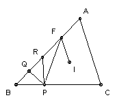

ABC is a triangle with angle A = 60o and incenter I. P lies on BC with 3 BP = BC. The point F lies on AB and IF is parallel to AC. Show that ∠BFP = ∠FBI.
Solution

Take Q to be the foot of the perpendicular from P to AB and take R on the segment AQ so that QR = QB. We have PR = PB, so ∠FBI = ½ B = ½ ∠BRP = ½ (∠BFP + ∠RPF). So we have to show that ∠BFP = ∠RPF, in other words that RP = RF.
We have BC = BI cos B/2 + CI cos C/2. But CI sin C/2 = BI sin B/2, so BC = BI(cos B/2 sin C/2 + sin B/2 cos C/2)/sin C/2 = BI sin(B/2 + C/2)/sin C/2 = BI sin 60o/sin C/2. Hence BI = (2/√3) BC sin C/2. Applying the sine rule to triangle BFI, we get BF/BI = sin(60o + B/2)/sin 60o, so BF = (2/√3) BI sin(60o + B/2) = (4/3) BC sin C/2 sin(60o + B/2).
But 2 sin C/2 sin(60o + B/2) = cos(A + B/2 - C/2) - cos(A + B/2 + C/2) = cos B - cos 120o = cos B + ½. Hence BF = (2/3) BC cos B + (1/3) BC = 2 PB cos B + PB = BR + RP. But BF = BR + RF, so RP = RF, as required.

© John Scholes
jscholes@kalva.demon.co.uk
1 Jan 2003
Last corrected/updated 1 Jan 03